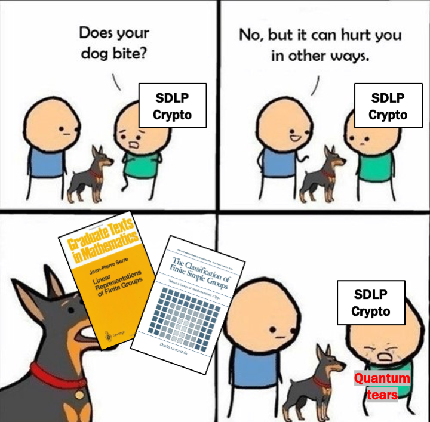

List of the authors: Christopher Battarbee, Giacomo Borin, Ryann Cartor, Nadia Heninger, David Jao, Delaram Kahrobaei, Laura Maddison, Edoardo Persichetti, Angela Robinson, Daniel Smith-Tone and Rainer Steinwandt.
We show that the semidirect discrete logarithm problem (SDLP) in any finite group cannot be considered a valid assumption for the design of quantum resistant primitives. The believed hardness of the semidirect discrete logarithm problem underlies more than a decade of works constructing candidate post-quantum cryptographic algorithms from nonabelian groups. We use a series of reduction results to show that it suffices to consider SDLP in finite simple groups. We then apply the celebrated Classification of Finite Simple Groups to consider each family. The infinite families of finite simple groups admit, in a fairly general setting, linear algebraic attacks providing a reduction to the classical discrete logarithm problem. For the sporadic simple groups, we show that their inherent properties render them unsuitable for cryptographically hard SDLP instances, which we illustrate via a Baby-Step Giant-Step style attack against SDLP in the Monster Group.
Our quantum SDLP algorithm is fully constructive for all but three remaining cases that appear to be gaps in the literature on constructive recognition of groups; for these cases SDLP is no harder than finding a linear representation. We conclude that SDLP is not a suitable post-quantum hardness assumption for any choice of finite group.
Funny moment:
